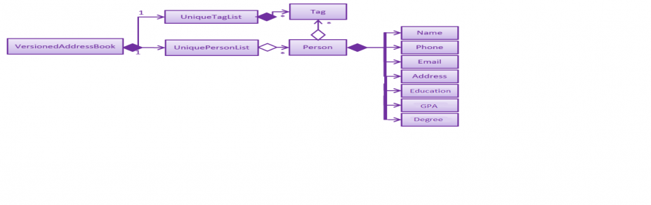

By: RecruitMe Since: January 2019 Licence: MIT
1. Setting up
1.1. Prerequisites
-
JDK
9(revision1.9.4or later)Only JDK 9 is supported.
This app will not work with later major JDK releases such as JDK 10, 11, etc. -
IntelliJ IDE
IntelliJ by default has Gradle and JavaFx plugins installed.
Do not disable them. If you have disabled them, go toFile>Settings>Pluginsto re-enable them.
1.2. Setting up the project in your computer
-
Fork this repo, and clone the fork to your computer
-
Open IntelliJ (if you are not in the welcome screen, click
File>Close Projectto close the existing project dialog first) -
Set up the correct JDK version for Gradle
-
Click
Configure>Project Defaults>Project Structure -
Click
New…and find the directory of the JDK
-
-
Click
Import Project -
Locate the
build.gradlefile and select it. ClickOK -
Click
Open as Project -
Click
OKto accept the default settings -
Open a console and run the command
gradlew processResources(Mac/Linux:./gradlew processResources). It should finish with theBUILD SUCCESSFULmessage.
This will generate all resources required by the application and tests.
1.3. Verifying the setup
-
Run the
seedu.address.MainAppand try a few commands -
Run the tests to ensure they all pass.
1.4. Configurations to do before writing code
1.4.1. Configuring the coding style
This project follows oss-generic coding standards. IntelliJ’s default style is mostly compliant with ours but it uses a different import order from ours. To rectify,
-
Go to
File>Settings…(Windows/Linux), orIntelliJ IDEA>Preferences…(macOS) -
Select
Editor>Code Style>Java -
Click on the
Importstab to set the order-
For
Class count to use import with '*'andNames count to use static import with '*': Set to999to prevent IntelliJ from contracting the import statements -
For
Import Layout: The order isimport static all other imports,import java.*,import javax.*,import org.*,import com.*,import all other imports. Add a<blank line>between eachimport
-
Optionally, you can follow the UsingCheckstyle.adoc document to configure Intellij to check style-compliance as you write code.
1.4.2. Updating documentation to match your fork
After forking the repo, the documentation will still have the SE-EDU branding and refer to the se-edu/addressbook-level4 repo.
If you plan to develop this fork as a separate product (i.e. instead of contributing to se-edu/addressbook-level4), you should do the following:
-
Configure the site-wide documentation settings in
build.gradle, such as thesite-name, to suit your own project. -
Replace the URL in the attribute
repoURLinDeveloperGuide.adocandUserGuide.adocwith the URL of your fork.
1.4.3. Setting up CI
Set up Travis to perform Continuous Integration (CI) for your fork. See UsingTravis.adoc to learn how to set it up.
After setting up Travis, you can optionally set up coverage reporting for your team fork (see UsingCoveralls.adoc).
| Coverage reporting could be useful for a team repository that hosts the final version but it is not that useful for your personal fork. |
Optionally, you can set up AppVeyor as a second CI (see UsingAppVeyor.adoc).
| Having both Travis and AppVeyor ensures your App works on both Unix-based platforms and Windows-based platforms (Travis is Unix-based and AppVeyor is Windows-based) |
1.4.4. Getting started with coding
When you are ready to start coding,
-
Get some sense of the overall design by reading Section 2.1, “Architecture”.
-
Take a look at [GetStartedProgramming].
2. Design
2.1. Architecture

The Architecture Diagram given above explains the high-level design of the App. Given below is a quick overview of each component.
The .pptx files used to create diagrams in this document can be found in the diagrams folder. To update a diagram, modify the diagram in the pptx file, select the objects of the diagram, and choose Save as picture.
|
Main has only one class called MainApp. It is responsible for,
-
At app launch: Initializes the components in the correct sequence, and connects them up with each other.
-
At shut down: Shuts down the components and invokes cleanup method where necessary.
Commons represents a collection of classes used by multiple other components.
The following class plays an important role at the architecture level:
-
LogsCenter: Used by many classes to write log messages to the App’s log file.
The rest of the App consists of four components.
Each of the four components
-
Defines its API in an
interfacewith the same name as the Component. -
Exposes its functionality using a
{Component Name}Managerclass.
For example, the Logic component (see the class diagram given below) defines it’s API in the Logic.java interface and exposes its functionality using the LogicManager.java class.

How the architecture components interact with each other
The Sequence Diagram below shows how the components interact with each other for the scenario where the user issues the command delete 1.

delete 1 commandThe sections below give more details of each component.
2.2. UI component

API : Ui.java
The UI consists of a MainWindow that is made up of parts e.g.CommandBox, ResultDisplay, PersonListPanel, StatusBarFooter, BrowserPanel etc. All these, including the MainWindow, inherit from the abstract UiPart class.
The UI component uses JavaFx UI framework. The layout of these UI parts are defined in matching .fxml files that are in the src/main/resources/view folder. For example, the layout of the MainWindow is specified in MainWindow.fxml
The UI component,
-
Executes user commands using the
Logiccomponent. -
Listens for changes to
Modeldata so that the UI can be updated with the modified data.
2.3. Logic component
API :
Logic.java
-
Logicuses theAddressBookParserclass to parse the user command. -
This results in a
Commandobject which is executed by theLogicManager. -
The command execution can affect the
Model(e.g. adding a person). -
The result of the command execution is encapsulated as a
CommandResultobject which is passed back to theUi. -
In addition, the
CommandResultobject can also instruct theUito perform certain actions, such as displaying help to the user.
Given below is the Sequence Diagram for interactions within the Logic component for the execute("delete 1") API call.

delete 1 Command2.4. Model component
API : Model.java
The Model,
-
stores a
UserPrefobject that represents the user’s preferences. -
stores the Address Book data.
-
exposes an unmodifiable
ObservableList<Person>that can be 'observed' e.g. the UI can be bound to this list so that the UI automatically updates when the data in the list change. -
does not depend on any of the other three components.
As a more OOP model, we can store a Tag list in Address Book, which Person can reference. This would allow Address Book to only require one Tag object per unique Tag, instead of each Person needing their own Tag object. An example of how such a model may look like is given below. |
2.5. Storage component

API : Storage.java
The Storage component,
-
can save
UserPrefobjects in json format and read it back. -
can save the Address Book data in json format and read it back.
2.6. Common classes
Classes used by multiple components are in the seedu.addressbook.commons package.
3. Implementation
This section describes some noteworthy details on how certain features are implemented.
3.1. Undo/Redo feature
3.1.1. Current Implementation
The undo/redo mechanism is facilitated by VersionedAddressBook.
It extends AddressBook with an undo/redo history, stored internally as an addressBookStateList and currentStatePointer.
Additionally, it implements the following operations:
-
VersionedAddressBook#commit()— Saves the current address book state in its history. -
VersionedAddressBook#undo()— Restores the previous address book state from its history. -
VersionedAddressBook#redo()— Restores a previously undone address book state from its history.
These operations are exposed in the Model interface as Model#commitAddressBook(), Model#undoAddressBook() and Model#redoAddressBook() respectively.
Given below is an example usage scenario and how the undo/redo mechanism behaves at each step.
Step 1. The user launches the application for the first time. The VersionedAddressBook will be initialized with the initial address book state, and the currentStatePointer pointing to that single address book state.

Step 2. The user executes delete 5 command to delete the 5th person in the address book. The delete command calls Model#commitAddressBook(), causing the modified state of the address book after the delete 5 command executes to be saved in the addressBookStateList, and the currentStatePointer is shifted to the newly inserted address book state.

Step 3. The user executes add n/David … to add a new person. The add command also calls Model#commitAddressBook(), causing another modified address book state to be saved into the addressBookStateList.

If a command fails its execution, it will not call Model#commitAddressBook(), so the address book state will not be saved into the addressBookStateList.
|
Step 4. The user now decides that adding the person was a mistake, and decides to undo that action by executing the undo command. The undo command will call Model#undoAddressBook(), which will shift the currentStatePointer once to the left, pointing it to the previous address book state, and restores the address book to that state.

If the currentStatePointer is at index 0, pointing to the initial address book state, then there are no previous address book states to restore. The undo command uses Model#canUndoAddressBook() to check if this is the case. If so, it will return an error to the user rather than attempting to perform the undo.
|
The following sequence diagram shows how the undo operation works:

The redo command does the opposite — it calls Model#redoAddressBook(), which shifts the currentStatePointer once to the right, pointing to the previously undone state, and restores the address book to that state.
If the currentStatePointer is at index addressBookStateList.size() - 1, pointing to the latest address book state, then there are no undone address book states to restore. The redo command uses Model#canRedoAddressBook() to check if this is the case. If so, it will return an error to the user rather than attempting to perform the redo.
|
Step 5. The user then decides to execute the command list. Commands that do not modify the address book, such as list, will usually not call Model#commitAddressBook(), Model#undoAddressBook() or Model#redoAddressBook(). Thus, the addressBookStateList remains unchanged.

Step 6. The user executes clear, which calls Model#commitAddressBook(). Since the currentStatePointer is not pointing at the end of the addressBookStateList, all address book states after the currentStatePointer will be purged. We designed it this way because it no longer makes sense to redo the add n/David … command. This is the behavior that most modern desktop applications follow.

The following activity diagram summarizes what happens when a user executes a new command:

3.1.2. Design Considerations
Aspect: How undo & redo executes
-
Alternative 1 (current choice): Saves the entire address book.
-
Pros: Easy to implement.
-
Cons: May have performance issues in terms of memory usage.
-
-
Alternative 2: Individual command knows how to undo/redo by itself.
-
Pros: Will use less memory (e.g. for
delete, just save the person being deleted). -
Cons: We must ensure that the implementation of each individual command are correct.
-
Aspect: Data structure to support the undo/redo commands
-
Alternative 1 (current choice): Use a list to store the history of address book states.
-
Pros: Easy for new Computer Science student undergraduates to understand, who are likely to be the new incoming developers of our project.
-
Cons: Logic is duplicated twice. For example, when a new command is executed, we must remember to update both
HistoryManagerandVersionedAddressBook.
-
-
Alternative 2: Use
HistoryManagerfor undo/redo-
Pros: We do not need to maintain a separate list, and just reuse what is already in the codebase.
-
Cons: Requires dealing with commands that have already been undone: We must remember to skip these commands. Violates Single Responsibility Principle and Separation of Concerns as
HistoryManagernow needs to do two different things.
-
3.2. Filter or/and/clear feature
3.2.1. Current Implementation

Filtering mechanism is facilitated by AddressBook.
In the AddressBook class, we have added a new UniquePersonsList parameter called allPersonsStorage and this parameter stores also the persons in the application.
When the filtering method is used, the persons parameter in the class is updated according to the filtering criterion (the persons that are not matching the conditions are removed)
but the list in the new parameter allPersonsStorage are not changed. At the end, when the filtering is cleared, the persons parameter is updated with the information in allPersonsStorage.
If user exits the program when filtering is active, in the stop method of MainApp class, a new method is called that clears the filtering and saves all the persons to the JSON file, rather than filtered contacts.
In filtering system, important processes are as follows:
-
filter or [CRITERION]— Filters the persons and includes the ones that has at least one match from the criterion.
Every single one of the persons in the persons parameter is traversed.
There is a flag that returns true for each person, if a criteria matches. For each criteria,
the persons are investigated with contains method in a case insensitive manner. With case insensitivity,
if one of the criterion is Ale for the name parameter, every person that contains Ale in their names are
selected.
-
filter and [CRITERION]— Filters the persons and removes the ones that does not match even one of the criterion.
Every single one of the persons in the persons parameter is traversed.
There is a flag that returns false for each person, if a criteria does not match. For each criteria,
the persons are investigated with contains method in a case insensitive manner. With case insensitivity,
if one of the criterion is Ale for the name parameter, every person that contains Ale in their names are
passed successfully from the name criteria.
-
filter clear— Clears all the filtering that are active in current case
As explained in the beginning part of the filtering method, the filter is cleared with restoring all the persons
who are not in persons parameter but included in allPersonsStorage parameter
3.2.2. Working Principle of FilterCommandParser Class
Filtering command is taken from the user as follows:
-
filter or/and [n/NAME/n] [p/PHONE/p] [e/EMAIL/e] [g/GPA/g] [d/EDUCATION/d] [a/ADDRESS/a] [skill/ SKILL1, SKILL2, … /skill] [position/ POSITION1, POSITION2, … /position] -
filter clear
To process the input from user, these steps are followed in the code:
-
first the input is cleared from multiple spaces or any unwanted additional forms.
-
after that according to the first couple of the characters, the exact process is determined (If it is
addorororclear) -
if it is clear, the FilterCommand function is called fo that method. If it is not, followings take place.
-
following that, the prefixes are searched. 5 flags are stored in
Stringform for 5 different filtering conditions and if the prefix itself exists and the reverse version also exist and the prefix itself is before the reverse one the flag is turned toavailable -
for the available parameters, the input is trimmed and separated from the prefixes. If the parameters does not match with the validity of the given type of the criteria, a message is printed to the screen and no action is made.
-
FilterCommand function is called. In the parameters passed to the function, the process type, criterion flags and criterion contexts are included.
3.2.3. Alternative Approaches
In this title, both Command implementation and Parser implementation will be discussed in 2 parts:
Command Implementation
Instead of adding another parameter in AddressBook called allPersonsStorage, another approach would be letting persons parameter to hold
all the unfiltered information and updating filteredPersons parameter in the ModelManager class. However, in order to implement that approach
we had to update the list in every time user uses filtering with a Predicate approach. Because, FilteredList class (the type of the filteredPersons
parameter) uses these in very crucial parts of its implementation.
-
Pros of this approach:
-
Does not need any additional parameter to be created in AddressBook class.
-
Decreases the number of changes made in each list changing method of the AddressBook class. Because, if any additional parameter is added to AddressBook class, all the functions have to be changed considering the new parameter.
-
-
Cons of this approach:
-
It is hard and time consuming to implement this approach. Actually that’s why we did not choose that approach.
-
It may require some changes in the
Modelclass.
-
Parser Implementation
Instead of putting the criterion contents between both prefixes and reverse prefixes, like the addition process we could only add the content after the prefix (without any reverse prefix usage).
-
Pros of this approach:
-
User would need to write less number of characters
-
-
Cons of this approach:
-
Using also reverse prefix makes the job much easier, because it simply marks also the end of the content.
-
In currently implemented version, no order of the criterion is necessary. So, first phone number and then name etc. can be added for filtering condition. However in the alternative approach, implementing the input taking with no order is harder.
-
3.2.4. Combining the Command With Other Commands
Since a new parameter is added to the AddressBook class, some changes should have done to adjust the existing processes to
be used at the same time with filtering commands.
Undo/Redo Command
-
To save the filtering information at each step, a new list is created to hold the filtering information at current stage (active or not) whenever the current AddressBook is pushed to the list.
-
resetDatamethod is modified in order to reset theallPersonsStorageparameter if needed.
Add, Edit and Delete Commands
-
commitmethod is modified for transferring the filtering information to the stage after committing is made and also the filtering information is pushed to the list here -
deleteandeditprocesses are working without clearing the filter. -
addmethod clears the filter when a new person is added. Because, all the previous filtering are not saved in anywhere, so we cannot control if the newly added person matches with the filtering criterion. Thus, all the filtering is cleared.
Other Commands
These are the ones that requires almost no changes or only small amount of changes to be compatible with filtering.
3.2.5. Testing of Filter Command Design
The testing methods for filtering is written for 3 different parts:
FilterCommandParserTests
Currently implemented test cases are below:
-
for missing parts of the input by the user, a test method runs. This method covers the situations where process type or field parameter or both are missing.
-
second test method includes the cases where the prefix itself and the reverse prefix does not match with each other.
For future release test cases:
-
Division of the unordered input for different criterion will be tested
FilterCommandTests
This test class is prepared for unit testing of Filtering Command. Currently implemented test cases are below:
-
executing filtering with only 1 condition
-
executing filtering with multiple conditions
-
executing filtering with all the criterion are given
-
clearing the filtering when one filter is active
-
clearing the filtering when multiple filters are active
FilterCommandIntegrationTests
This test class contains integration tests (interaction with the Model, UndoCommand, RedoCommand, AddCommand, DeleteCommand, SortCommand) for FilterCommand. Currently, no test cases are prepared but next release these test methods will be implemented:
-
executing sorting after filtering once
-
executing sorting after filtering twice
-
executing undo and redo after filtering once
-
executing undo and redo after filtering twice
-
executing undo after filtering is cleared
-
executing delete after filtering once
-
executing delete after filtering twice
-
executing add after filtering once
-
executing add after filtering twice
-
a complex case of different processes combined: The flow will be as follows for the next test:
-
1- filter and
-
2- filter or
-
3- sort alphabetical
-
4- delete 1
-
5- undo
-
6- undo
-
7- redo
-
8- filter clear
-
9- undo
-
10- add …
-
11- filter clear
-
12-undo
-
13- filter clear
-
3.3. Sort Commands
3.3.1. Current Implementation
There are currently five main sorting methods present: name, surname, gpa, education, skills.
There is also a complimentary reverse sort method for each main sorting method.
-
name is called by the user through the following cli input:
sort name.
It takes the current list displayed in the left hand GUI panel and sorts them by name alphabetically. The name sort begins with the first name and then proceeds to last name. -
surname is called by the user through the following cli input:
sort surname.
It takes the current list displayed in the left hand GUI panel and sorts them by surname alphabetically. -
gpa is called by the user through the following cli input:
sort gpa.
It takes the current list displayed in the left hand GUI panel and sorts them by gpa in increasing numeric order. -
education is called by the user through the following cli input:
sort education.
It takes the current list displayed in the left hand GUI panel and sorts them by education alphabetically. -
skills is called by the user through the following cli input:
sort skills.
It takes the current list displayed in the left hand GUI panel and first orders the skill tags for each person alphabetically. The method then proceeds to sort all persons based on their skill tags, in alphabetical order. -
positions is called by the user through the following cli input:
sort positions.
It takes the current list displayed in the left hand GUI panel and first orders the position tags for each person alphabetically. The method then proceeds to sort all persons based on their position tags, in alphabetical order. -
endorsements is called by the user through the following cli input:
sort endorsements.
It takes the current list displayed in the left hand GUI panel and first orders the endorsements for each person alphabetically. The method then proceeds to sort all persons based on their endorsements, in alphabetical order. -
skill number is called by the user through the following cli input:
sort skill number.
It takes the current list displayed in the left hand GUI panel and orders the persons based on their number of skills in descending order. -
position number is called by the user through the following cli input:
sort position number.
It takes the current list displayed in the left hand GUI panel and orders the persons based on their number of positions in descending order. -
endorsement number is called by the user through the following cli input:
sort endorsement number.
It takes the current list displayed in the left hand GUI panel and orders the persons based on their number of endorsements in descending order. -
reverse can be applied before the sort keyword (e.g.
name) through the following cli input:sort reverse name
(the current list means that if filter is on, only those filtered persons shall be sorted and the filter shall remain on)
3.3.2. Implementation Rational
Despite the risk of slightly increasing the coupling, the aim was to use methods already written and rely on good cohesion.
For example, once a sort command has correctly written the correctly ordered persons to a List<Person>, rather than duplicating large amounts of code by modifying the already listed persons in the GUI, it shall simply remove the persons in that addressbook version and then immediately re-add them in the correct order.
It is of note that the temporary deletion of persons from the addressbook should be foolproof and there should be no way that the sort command ever permanently deletes the addressbook. Furthermore, ensuring the command works with the already implemented undo/redo command should ensure the user still has full control over all the persons in the contact book.
3.3.3. Approaches Considered
When writing sort commands, there were two approaches considered: modify the indices of all persons and then refresh the left-hand GUI panel with this new list; or temporarily delete the list of persons and then add a new list of correctly ordered persons.
Elements of lists in Java are ordered by when they were added. Sorting is possible using Collections, however this requires them to be strings. Since the Recruit Me application contains lists of various types, typically Person, there is no immediate compatibility with Collections. Furthermore it was suspected that to simply modify the indices of persons, a lot of duplicate code would be need to be written since this aspect of addressbook-level4 was not easily modifiable. Because of this the second method was opted for.
3.3.4. Adding a New Sort Command
To add a new sort command, the following classes should be altered accordingly:
-
cliSyntax- add the necessary new SortWord (and the reverse option) -
SortCommandParser- add the new SortWord as an accepted input -
SortCommand- add the call to the newSortNewMethodclass when the new SortWord is inputted -
SortNewMethod- a new class, following the example ofSortName, that will return a list of Persons correctly ordered according to the new method -
SortUtil- a place for lower-level processes required by the new sort method and called fromSortNewMethod
It is also sometimes of use to alter Person should the new method demand access of a certain element of Person that may be useful for other classes in the future.
The developer should also add the necessary testing methods in SortCommandTest
(TODO: INSERT CLASS DIAGRAM FOR v1.4)
(TODO: INSERT SEQUENCE DIAGRAM FOR v1.4)
3.4. Endorse Command
====Current Implementation The candidate tags are organized as pink for skills, yellow for positions of interest, and blue for employee endorsements. The endorse command allows employees to select candidates by their index and create an endorsement tag. There is a complementary 'clear' function for removing endorsement tags.
3.5. [Proposed] Data Encryption
{Explain here how the data encryption feature will be implemented}
3.6. Logging
We are using java.util.logging package for logging. The LogsCenter class is used to manage the logging levels and logging destinations.
-
The logging level can be controlled using the
logLevelsetting in the configuration file (See Section 3.7, “Configuration”) -
The
Loggerfor a class can be obtained usingLogsCenter.getLogger(Class)which will log messages according to the specified logging level -
Currently log messages are output through:
Consoleand to a.logfile.
Logging Levels
-
SEVERE: Critical problem detected which may possibly cause the termination of the application -
WARNING: Can continue, but with caution -
INFO: Information showing the noteworthy actions by the App -
FINE: Details that is not usually noteworthy but may be useful in debugging e.g. print the actual list instead of just its size
3.7. Configuration
Certain properties of the application can be controlled (e.g user prefs file location, logging level) through the configuration file (default: config.json).
[[Implementation-Sort Commands]] === Sort Commands
When writing sort commands, there were two approaches considered: modify the indices of all persons and then refresh the left-hand GUI panel with this new list; or temporarily delete the list of persons and then add a new list of correctly ordered persons.
Elements of lists in Java are ordered by when they were added. Sorting is possible using Collections, however this requires them to be strings. Since the Recruit Me application contains lists of various types, typically Person, there is no immediate compatibility with Collections. Furthermore it was suspected that to simply modify the indices of persons, a lot of duplicate code would be need to be written since this aspect of addressbooklevel4 was not easily modifiable. Because of this the second method was opted for.
Despite the risk of slightly increasing the coupling, the aim was to use methods already written and rely on good cohesion. For example, once a sort command has correctly written the correctly ordered persons to a List<Person>, rather than duplicating large amounts of code by modifying the already listed persons, it shall use the already written delete person and add person commands.
It is of note that the temporary deletion of persons from the addressbook should be foolproof and there should be no way that the sort command ever permenantly deltes the addressbook. Furthermore, ensuring the command works with the already implemented undo/redo command should ensure the user still has full control over all the persons in the contact book.
To add a new sort command, the following should be taken into account… (INSERT CLASS DIAGRAM)
Two sorting methods are currently present: alphabetical and skills…
=== Education and GPA
New parameters for perspective employees to add to their information. Employers are able to look at this information to determine if the person is suitable for the position at the company. Education and GPA can be use to filer or sort the perspective employees.
Education
New parameter to specify the level of schooling achieved by the perspective employee.
GPA
New parameter for the grade point average achieved by the perspective employee.
NOT COMPLETE.
== Documentation
We use asciidoc for writing documentation.
| We chose asciidoc over Markdown because asciidoc, although a bit more complex than Markdown, provides more flexibility in formatting. |
=== Editing Documentation
See UsingGradle.adoc to learn how to render .adoc files locally to preview the end result of your edits.
Alternatively, you can download the AsciiDoc plugin for IntelliJ, which allows you to preview the changes you have made to your .adoc files in real-time.
=== Publishing Documentation
See UsingTravis.adoc to learn how to deploy GitHub Pages using Travis.
=== Converting Documentation to PDF format
We use Google Chrome for converting documentation to PDF format, as Chrome’s PDF engine preserves hyperlinks used in webpages.
Here are the steps to convert the project documentation files to PDF format.
-
Follow the instructions in UsingGradle.adoc to convert the AsciiDoc files in the
docs/directory to HTML format. -
Go to your generated HTML files in the
build/docsfolder, right click on them and selectOpen with→Google Chrome. -
Within Chrome, click on the
Printoption in Chrome’s menu. -
Set the destination to
Save as PDF, then clickSaveto save a copy of the file in PDF format. For best results, use the settings indicated in the screenshot below.

=== Site-wide Documentation Settings
The build.gradle file specifies some project-specific asciidoc attributes which affects how all documentation files within this project are rendered.
Attributes left unset in the build.gradle file will use their default value, if any.
|
| Attribute name | Description | Default value |
|---|---|---|
|
The name of the website. If set, the name will be displayed near the top of the page. |
not set |
|
URL to the site’s repository on GitHub. Setting this will add a "View on GitHub" link in the navigation bar. |
not set |
|
Define this attribute if the project is an official SE-EDU project. This will render the SE-EDU navigation bar at the top of the page, and add some SE-EDU-specific navigation items. |
not set |
=== Per-file Documentation Settings
Each .adoc file may also specify some file-specific asciidoc attributes which affects how the file is rendered.
Asciidoctor’s built-in attributes may be specified and used as well.
Attributes left unset in .adoc files will use their default value, if any.
|
| Attribute name | Description | Default value |
|---|---|---|
|
Site section that the document belongs to.
This will cause the associated item in the navigation bar to be highlighted.
One of: * Official SE-EDU projects only |
not set |
|
Set this attribute to remove the site navigation bar. |
not set |
=== Site Template
The files in docs/stylesheets are the CSS stylesheets of the site.
You can modify them to change some properties of the site’s design.
The files in docs/templates controls the rendering of .adoc files into HTML5.
These template files are written in a mixture of Ruby and Slim.
|
Modifying the template files in |
== Testing
=== Running Tests
There are three ways to run tests.
| The most reliable way to run tests is the 3rd one. The first two methods might fail some GUI tests due to platform/resolution-specific idiosyncrasies. |
Method 1: Using IntelliJ JUnit test runner
-
To run all tests, right-click on the
src/test/javafolder and chooseRun 'All Tests' -
To run a subset of tests, you can right-click on a test package, test class, or a test and choose
Run 'ABC'
Method 2: Using Gradle
-
Open a console and run the command
gradlew clean allTests(Mac/Linux:./gradlew clean allTests)
| See UsingGradle.adoc for more info on how to run tests using Gradle. |
Method 3: Using Gradle (headless)
Thanks to the TestFX library we use, our GUI tests can be run in the headless mode. In the headless mode, GUI tests do not show up on the screen. That means the developer can do other things on the Computer while the tests are running.
To run tests in headless mode, open a console and run the command gradlew clean headless allTests (Mac/Linux: ./gradlew clean headless allTests)
=== Types of tests
We have two types of tests:
-
GUI Tests - These are tests involving the GUI. They include,
-
System Tests that test the entire App by simulating user actions on the GUI. These are in the
systemtestspackage. -
Unit tests that test the individual components. These are in
seedu.address.uipackage.
-
-
Non-GUI Tests - These are tests not involving the GUI. They include,
-
Unit tests targeting the lowest level methods/classes.
e.g.seedu.address.commons.StringUtilTest -
Integration tests that are checking the integration of multiple code units (those code units are assumed to be working).
e.g.seedu.address.storage.StorageManagerTest -
Hybrids of unit and integration tests. These test are checking multiple code units as well as how the are connected together.
e.g.seedu.address.logic.LogicManagerTest
-
=== Troubleshooting Testing
Problem: HelpWindowTest fails with a NullPointerException.
-
Reason: One of its dependencies,
HelpWindow.htmlinsrc/main/resources/docsis missing. -
Solution: Execute Gradle task
processResources.
== Dev Ops
=== Build Automation
See UsingGradle.adoc to learn how to use Gradle for build automation.
=== Continuous Integration
We use Travis CI and AppVeyor to perform Continuous Integration on our projects. See UsingTravis.adoc and UsingAppVeyor.adoc for more details.
=== Coverage Reporting
We use Coveralls to track the code coverage of our projects. See UsingCoveralls.adoc for more details.
=== Documentation Previews When a pull request has changes to asciidoc files, you can use Netlify to see a preview of how the HTML version of those asciidoc files will look like when the pull request is merged. See UsingNetlify.adoc for more details.
=== Making a Release
Here are the steps to create a new release.
-
Update the version number in
MainApp.java. -
Generate a JAR file using Gradle.
-
Tag the repo with the version number. e.g.
v0.1 -
Create a new release using GitHub and upload the JAR file you created.
=== Managing Dependencies
A project often depends on third-party libraries. For example, Address Book depends on the Jackson library for JSON parsing. Managing these dependencies can be automated using Gradle. For example, Gradle can download the dependencies automatically, which is better than these alternatives:
-
Include those libraries in the repo (this bloats the repo size)
-
Require developers to download those libraries manually (this creates extra work for developers)
== Suggested Programming Tasks to Get Started
Suggested path for new programmers:
-
First, add small local-impact (i.e. the impact of the change does not go beyond the component) enhancements to one component at a time. Some suggestions are given in [GetStartedProgramming-EachComponent].
-
Next, add a feature that touches multiple components to learn how to implement an end-to-end feature across all components. [GetStartedProgramming-RemarkCommand] explains how to go about adding such a feature.
=== Improving each component
Each individual exercise in this section is component-based (i.e. you would not need to modify the other components to get it to work).
Logic component
Scenario: You are in charge of logic. During dog-fooding, your team realize that it is troublesome for the user to type the whole command in order to execute a command. Your team devise some strategies to help cut down the amount of typing necessary, and one of the suggestions was to implement aliases for the command words. Your job is to implement such aliases.
Do take a look at Section 2.3, “Logic component” before attempting to modify the Logic component.
|
-
Add a shorthand equivalent alias for each of the individual commands. For example, besides typing
clear, the user can also typecto remove all persons in the list.
Model component
Scenario: You are in charge of model. One day, the logic-in-charge approaches you for help. He wants to implement a command such that the user is able to remove a particular tag from everyone in the address book, but the model API does not support such a functionality at the moment. Your job is to implement an API method, so that your teammate can use your API to implement his command.
Do take a look at Section 2.4, “Model component” before attempting to modify the Model component.
|
-
Add a
removeTag(Tag)method. The specified tag will be removed from everyone in the address book.
Ui component
Scenario: You are in charge of ui. During a beta testing session, your team is observing how the users use your address book application. You realize that one of the users occasionally tries to delete non-existent tags from a contact, because the tags all look the same visually, and the user got confused. Another user made a typing mistake in his command, but did not realize he had done so because the error message wasn’t prominent enough. A third user keeps scrolling down the list, because he keeps forgetting the index of the last person in the list. Your job is to implement improvements to the UI to solve all these problems.
Do take a look at Section 2.2, “UI component” before attempting to modify the UI component.
|
-
Use different colors for different tags inside person cards. For example,
friendstags can be all in brown, andcolleaguestags can be all in yellow.Before

After

-
Modify
NewResultAvailableEventsuch thatResultDisplaycan show a different style on error (currently it shows the same regardless of errors).Before

After

-
Modify the
StatusBarFooterto show the total number of people in the address book.Before

After

Storage component
Scenario: You are in charge of storage. For your next project milestone, your team plans to implement a new feature of saving the address book to the cloud. However, the current implementation of the application constantly saves the address book after the execution of each command, which is not ideal if the user is working on limited internet connection. Your team decided that the application should instead save the changes to a temporary local backup file first, and only upload to the cloud after the user closes the application. Your job is to implement a backup API for the address book storage.
Do take a look at Section 2.5, “Storage component” before attempting to modify the Storage component.
|
-
Add a new method
backupAddressBook(ReadOnlyAddressBook), so that the address book can be saved in a fixed temporary location.
=== Creating a new command: remark
By creating this command, you will get a chance to learn how to implement a feature end-to-end, touching all major components of the app.
Scenario: You are a software maintainer for addressbook, as the former developer team has moved on to new projects. The current users of your application have a list of new feature requests that they hope the software will eventually have. The most popular request is to allow adding additional comments/notes about a particular contact, by providing a flexible remark field for each contact, rather than relying on tags alone. After designing the specification for the remark command, you are convinced that this feature is worth implementing. Your job is to implement the remark command.
==== Description
Edits the remark for a person specified in the INDEX.
Format: remark INDEX r/[REMARK]
Examples:
-
remark 1 r/Likes to drink coffee.
Edits the remark for the first person toLikes to drink coffee. -
remark 1 r/
Removes the remark for the first person.
==== Step-by-step Instructions
===== [Step 1] Logic: Teach the app to accept 'remark' which does nothing
Let’s start by teaching the application how to parse a remark command. We will add the logic of remark later.
Main:
-
Add a
RemarkCommandthat extendsCommand. Upon execution, it should just throw anException. -
Modify
AddressBookParserto accept aRemarkCommand.
Tests:
-
Add
RemarkCommandTestthat tests thatexecute()throws an Exception. -
Add new test method to
AddressBookParserTest, which tests that typing "remark" returns an instance ofRemarkCommand.
===== [Step 2] Logic: Teach the app to accept 'remark' arguments
Let’s teach the application to parse arguments that our remark command will accept. E.g. 1 r/Likes to drink coffee.
Main:
-
Modify
RemarkCommandto take in anIndexandStringand print those two parameters as the error message. -
Add
RemarkCommandParserthat knows how to parse two arguments, one index and one with prefix 'r/'. -
Modify
AddressBookParserto use the newly implementedRemarkCommandParser.
Tests:
-
Modify
RemarkCommandTestto test theRemarkCommand#equals()method. -
Add
RemarkCommandParserTestthat tests different boundary values forRemarkCommandParser. -
Modify
AddressBookParserTestto test that the correct command is generated according to the user input.
===== [Step 3] Ui: Add a placeholder for remark in PersonCard
Let’s add a placeholder on all our PersonCard s to display a remark for each person later.
Main:
-
Add a
Labelwith any random text insidePersonListCard.fxml. -
Add FXML annotation in
PersonCardto tie the variable to the actual label.
Tests:
-
Modify
PersonCardHandleso that future tests can read the contents of the remark label.
===== [Step 4] Model: Add Remark class
We have to properly encapsulate the remark in our Person class. Instead of just using a String, let’s follow the conventional class structure that the codebase already uses by adding a Remark class.
Main:
-
Add
Remarkto model component (you can copy fromAddress, remove the regex and change the names accordingly). -
Modify
RemarkCommandto now take in aRemarkinstead of aString.
Tests:
-
Add test for
Remark, to test theRemark#equals()method.
===== [Step 5] Model: Modify Person to support a Remark field
Now we have the Remark class, we need to actually use it inside Person.
Main:
-
Add
getRemark()inPerson. -
You may assume that the user will not be able to use the
addandeditcommands to modify the remarks field (i.e. the person will be created without a remark). -
Modify
SampleDataUtilto add remarks for the sample data (delete yourdata/addressbook.jsonso that the application will load the sample data when you launch it.)
===== [Step 6] Storage: Add Remark field to JsonAdaptedPerson class
We now have Remark s for Person s, but they will be gone when we exit the application. Let’s modify JsonAdaptedPerson to include a Remark field so that it will be saved.
Main:
-
Add a new JSON field for
Remark.
Tests:
-
Fix
invalidAndValidPersonAddressBook.json,typicalPersonsAddressBook.json,validAddressBook.jsonetc., such that the JSON tests will not fail due to a missingremarkfield.
===== [Step 6b] Test: Add withRemark() for PersonBuilder
Since Person can now have a Remark, we should add a helper method to PersonBuilder, so that users are able to create remarks when building a Person.
Tests:
-
Add a new method
withRemark()forPersonBuilder. This method will create a newRemarkfor the person that it is currently building. -
Try and use the method on any sample
PersoninTypicalPersons.
===== [Step 7] Ui: Connect Remark field to PersonCard
Our remark label in PersonCard is still a placeholder. Let’s bring it to life by binding it with the actual remark field.
Main:
-
Modify
PersonCard's constructor to bind theRemarkfield to thePerson's remark.
Tests:
-
Modify
GuiTestAssert#assertCardDisplaysPerson(…)so that it will compare the now-functioning remark label.
===== [Step 8] Logic: Implement RemarkCommand#execute() logic
We now have everything set up… but we still can’t modify the remarks. Let’s finish it up by adding in actual logic for our remark command.
Main:
-
Replace the logic in
RemarkCommand#execute()(that currently just throws anException), with the actual logic to modify the remarks of a person.
Tests:
-
Update
RemarkCommandTestto test that theexecute()logic works.
==== Full Solution
See this PR for the step-by-step solution.
== Product Scope - Target user profile
General Needs:
-
has a need to manage a significant number of contacts
-
prefer desktop apps over other types
-
can type fast
-
prefers typing over mouse input
-
is reasonably comfortable using CLI apps
Special Needs:
-
this is an application for recruitment agency specifically
-
the commands (filtering, sorting, deleting, adding etc.) and tags (education, experience etc.) are designed for applicants
Value proposition: manage contacts faster than a typical mouse/GUI driven app
== User Stories
Priorities: High (must have) - * * *, Medium (nice to have) - * *, Low (unlikely to have) - *
| Priority | As a … | I want to … | So that I can… |
|---|---|---|---|
|
new user |
see usage instructions |
refer to instructions when I forget how to use the App |
|
user |
add a new person |
|
|
user |
delete a person |
remove entries that I no longer need |
|
user |
find a person by name |
locate details of persons without having to go through the entire list |
|
user |
hide private contact details by default |
minimize chance of someone else seeing them by accident |
|
user with many persons in the address book |
sort persons by name |
locate a person easily |
|
user with many persons in the address book |
filter persons by any of the multiple properties at the same time |
see which persons are fit into the criterion |
|
user with many persons in the address book |
use all the other operations when filtering is active |
locate the searched persons more easily |
|
user with many persons in the address book |
disable the active filtering |
see all the list when the job is done |
|
user with many persons in the address book |
undo the operation what he/she just did |
prevent false updates in the address book |
|
user with many persons in the address book |
redo the operation what he/she just did |
prevent false undo operations in the address book |
|
user with many persons in the address book |
see the education level, technical skills and experience of the persons |
choose persons regarding more information given. |
{More to be added}
== Use Cases
(For all use cases below, the System is the AddressBook and the Actor is the user, unless specified otherwise)
Use case: Delete person
-
User requests to list persons
-
AddressBook shows a list of persons
-
User requests to delete a specific person in the list
-
AddressBook deletes the person
Use case ends.
Extensions
-
2a. The list is empty.
Use case ends.
-
3a. The given index is invalid.
-
3a1. AddressBook shows an error message.
Use case resumes at step 2.
-
Use case: Add person
-
User requests to add a new person with entering information about the new person
-
AddressBook adds the person
Use case ends.
Extensions
-
2a. The given information format is invalid
-
2a1. AddressBook shows an error message.
Use case ends.
-
-
2b. All the necessary information is not given.
-
2b1. AddressBook shows an error message.
Use case ends.
-
Use case: Filter person with and
-
User requests to filter address book with entering conditions to filter
-
AddressBook filters the persons that passes with all the conditions and prints those.
Use case ends.
Extensions
-
2a. The given information format is invalid
-
2a1. AddressBook shows an error message.
Use case ends.
-
Use case: Filter person with or
-
User requests to filter address book with entering conditions to filter
-
AddressBook filters the persons that passes with at least one of the conditions and prints those.
Use case ends.
Extensions
-
2a. The given information format is invalid
-
2a1. AddressBook shows an error message.
Use case ends.
-
Use case: Filter clearing
-
User requests to clear all the filtering in the address book.
-
Filtering is cleared and all the people in the book is printed.
Use case ends.
Use case: Sort address book by name
-
User requests to sort address book by name
-
The address book is printed in a sorted order with respect to the names.
Use case ends.
== Non Functional Requirements
-
Should work on any mainstream OS as long as it has Java
9(revision1.9.4or higher) installed. -
Should be able to hold up to 1000 persons without a noticeable sluggishness in performance for typical usage.
-
A user with above average typing speed for regular English text (i.e. not code, not system admin commands) should be able to accomplish most of the tasks faster using commands than using the mouse.
{More to be added}
== Glossary
== Product Survey
Product Name
Author: …
Pros:
-
…
-
…
Cons:
-
…
-
…
== Instructions for Manual Testing
Given below are instructions to test the app manually.
| These instructions only provide a starting point for testers to work on; testers are expected to do more exploratory testing. |
=== Launch and Shutdown
-
Initial launch
-
Download the jar file and copy into an empty folder
-
Double-click the jar file
Expected: Shows the GUI with a set of sample contacts. The window size may not be optimum.
-
-
Saving window preferences
-
Resize the window to an optimum size. Move the window to a different location. Close the window.
-
Re-launch the app by double-clicking the jar file.
Expected: The most recent window size and location is retained.
-
{ more test cases … }
=== Deleting a person
-
Deleting a person while all persons are listed
-
Prerequisites: List all persons using the
listcommand. Multiple persons in the list. -
Test case:
delete 1
Expected: First contact is deleted from the list. Details of the deleted contact shown in the status message. Timestamp in the status bar is updated. -
Test case:
delete 0
Expected: No person is deleted. Error details shown in the status message. Status bar remains the same. -
Other incorrect delete commands to try:
delete,delete x(where x is larger than the list size) {give more}
Expected: Similar to previous.
-
{ more test cases … }
=== Saving data
-
Dealing with missing/corrupted data files
-
{explain how to simulate a missing/corrupted file and the expected behavior}
-
{ more test cases … }